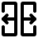

PLACE-IN Floor Editor
Undo
Redo
Select draw item
Create wall
Create rect wall
Create rect wall while cleaning internal
Create window
Create door

Split wall
Erase selected object
Clear all objects
Request review drawing
100%
Help
import from PublicAI
[ { "type": "STR", "categories": [ { "category": 0, "objects": [ { "type": "line", "data": [ [ 120.5, 298.5 ], [ 120.5, 322.5 ] ], "radius": 4.5 }, { "type": "line", "data": [ [ 120.5, 322.5 ], [ 141.5, 322.5 ] ], "radius": 4.5 }, { "type": "line", "data": [ [ 141.5, 322.5 ], [ 141.5, 342.5 ] ], "radius": 4.5 }, { "type": "line", "data": [ [ 141.5, 342.5 ], [ 178.5, 342.5 ] ], "radius": 4.5 }, { "type": "line", "data": [ [ 178.5, 342.5 ], [ 178.5, 354.5 ] ], "radius": 4.5 }, { "type": "line", "data": [ [ 178.5, 354.5 ], [ 293.5, 354.5 ] ], "radius": 4.5 }, { "type": "line", "data": [ [ 293.5, 354.5 ], [ 293.5, 346.5 ] ], "radius": 4.5 }, { "type": "line", "data": [ [ 293.5, 346.5 ], [ 358.5, 346.5 ] ], "radius": 4.5 }, { "type": "line", "data": [ [ 358.5, 346.5 ], [ 358.5, 158.5 ] ], "radius": 4.5 }, { "type": "line", "data": [ [ 358.5, 158.5 ], [ 217.5, 158.5 ] ], "radius": 4.5 }, { "type": "line", "data": [ [ 217.5, 158.5 ], [ 217.5, 163.5 ] ], "radius": 4.5 }, { "type": "line", "data": [ [ 217.5, 163.5 ], [ 148.5, 163.5 ] ], "radius": 4.5 }, { "type": "line", "data": [ [ 148.5, 163.5 ], [ 148.5, 236.5 ] ], "radius": 4.5 }, { "type": "line", "data": [ [ 148.5, 236.5 ], [ 121.5, 236.5 ] ], "radius": 4.5 }, { "type": "line", "data": [ [ 121.5, 236.5 ], [ 121.5, 244.5 ] ], "radius": 4.5 }, { "type": "line", "data": [ [ 121.5, 244.5 ], [ 116.5, 244.5 ] ], "radius": 4.5 }, { "type": "line", "data": [ [ 116.5, 244.5 ], [ 116.5, 269.5 ] ], "radius": 4.5 }, { "type": "line", "data": [ [ 116.5, 269.5 ], [ 120.5, 269.5 ] ], "radius": 4.5 }, { "type": "line", "data": [ [ 120.5, 269.5 ], [ 120.5, 298.5 ] ], "radius": 4.5 } ] }, { "category": 1, "objects": [ { "type": "line", "data": [ [ 232.5, 329.5 ], [ 249.5, 329.5 ] ], "radius": 2.0 }, { "type": "line", "data": [ [ 292.0, 321.5857864376269 ], [ 292.0, 327.4142135623731 ] ], "radius": 1.5 }, { "type": "line", "data": [ [ 290.62132034355966, 329.5 ], [ 282.5, 329.5 ] ], "radius": 2.0 }, { "type": "line", "data": [ [ 293.37867965644034, 319.5 ], [ 307.5, 319.5 ] ], "radius": 2.0 }, { "type": "line", "data": [ [ 180.0, 322.0 ], [ 180.0, 333.0 ] ], "radius": 0.75 }, { "type": "line", "data": [ [ 180.5, 335.79289321881345 ], [ 180.5, 338.5 ] ], "radius": 1.0 }, { "type": "line", "data": [ [ 209.20710678118655, 334.5 ], [ 181.79289321881345, 334.5 ] ], "radius": 1.0 }, { "type": "line", "data": [ [ 210.5, 331.79289321881345 ], [ 210.5, 333.20710678118655 ] ], "radius": 1.0 }, { "type": "line", "data": [ [ 178.5, 319.5 ], [ 177.5, 319.5 ] ], "radius": 2.0 }, { "type": "line", "data": [ [ 211.5, 329.5 ], [ 214.5, 329.5 ] ], "radius": 2.0 }, { "type": "line", "data": [ [ 192.0, 315.0 ], [ 196.5, 315.0 ] ], "radius": 0.75 }, { "type": "line", "data": [ [ 191.0, 316.0 ], [ 192.0, 315.0 ] ], "radius": 0.750000000000004 }, { "type": "line", "data": [ [ 207.5, 309.5 ], [ 207.5, 329.20710678118655 ] ], "radius": 1.0 }, { "type": "line", "data": [ [ 206.20710678118655, 330.5 ], [ 191.79289321881345, 330.5 ] ], "radius": 1.0 }, { "type": "line", "data": [ [ 187.5, 319.4497474683059 ], [ 187.5, 327.5 ] ], "radius": 4.0 }, { "type": "line", "data": [ [ 343.0, 317.4142135623731 ], [ 343.0, 308.0 ] ], "radius": 1.5 }, { "type": "line", "data": [ [ 336.5, 319.5 ], [ 341.62132034355966, 319.5 ] ], "radius": 2.0 }, { "type": "line", "data": [ [ 240.0, 306.0122743110544 ], [ 240.0, 323.9877256889456 ] ], "radius": 0.75 }, { "type": "line", "data": [ [ 142.5, 317.20710678118655 ], [ 142.5, 309.79289321881345 ] ], "radius": 1.0 }, { "type": "line", "data": [ [ 143.79289321881345, 318.5 ], [ 144.20710678118655, 318.5 ] ], "radius": 1.0 }, { "type": "line", "data": [ [ 142.0, 301.5857864376269 ], [ 142.0, 308.5857864376269 ] ], "radius": 1.5 }, { "type": "line", "data": [ [ 141.5, 299.5 ], [ 141.5, 300.37867965644034 ] ], "radius": 2.0 }, { "type": "line", "data": [ [ 151.5, 319.5 ], [ 146.5, 319.5 ] ], "radius": 2.0 }, { "type": "line", "data": [ [ 124.5, 299.5 ], [ 127.5, 299.5 ] ], "radius": 2.0 }, { "type": "line", "data": [ [ 207.5, 295.5 ], [ 207.5, 281.5 ] ], "radius": 1.0 }, { "type": "line", "data": [ [ 125.5, 270.5 ], [ 127.5, 270.5 ] ], "radius": 1.0 }, { "type": "line", "data": [ [ 240.0, 274.0 ], [ 240.0, 284.5 ] ], "radius": 0.75 }, { "type": "line", "data": [ [ 289.5, 273.79289321881345 ], [ 289.5, 313.5 ] ], "radius": 1.0 }, { "type": "line", "data": [ [ 240.17157287525384, 271.0 ], [ 288.0, 271.0 ] ], "radius": 2.5 }, { "type": "line", "data": [ [ 224.0, 280.0 ], [ 224.0, 287.5 ] ], "radius": 0.75 }, { "type": "line", "data": [ [ 223.0, 271.0 ], [ 223.0, 276.4142135623731 ] ], "radius": 1.5 }, { "type": "line", "data": [ [ 221.4142135623731, 278.0 ], [ 185.5857864376269, 278.0 ] ], "radius": 1.5 }, { "type": "line", "data": [ [ 144.20710678118655, 270.5 ], [ 141.5, 270.5 ] ], "radius": 1.0 }, { "type": "line", "data": [ [ 149.37867965644034, 271.5 ], [ 168.5, 271.5 ] ], "radius": 2.0 }, { "type": "line", "data": [ [ 146.82842712474616, 271.0 ], [ 148.17157287525384, 271.0 ] ], "radius": 2.5 }, { "type": "line", "data": [ [ 343.0, 274.0 ], [ 343.0, 231.0 ] ], "radius": 1.5 }, { "type": "line", "data": [ [ 286.0, 246.0 ], [ 293.5, 246.0 ] ], "radius": 0.75 }, { "type": "line", "data": [ [ 282.20710678118655, 245.5 ], [ 274.5, 245.5 ] ], "radius": 1.0 }, { "type": "line", "data": [ [ 284.0, 244.4142135623731 ], [ 284.0, 198.0 ] ], "radius": 1.5 }, { "type": "line", "data": [ [ 261.0, 204.0 ], [ 261.0, 244.0 ] ], "radius": 0.75 }, { "type": "line", "data": [ [ 260.20710678118655, 245.5 ], [ 232.5, 245.5 ] ], "radius": 1.0 }, { "type": "line", "data": [ [ 260.5, 202.79289321881345 ], [ 260.5, 197.5 ] ], "radius": 1.0 }, { "type": "line", "data": [ [ 217.20710678118655, 245.5 ], [ 193.5, 245.5 ] ], "radius": 1.0 }, { "type": "line", "data": [ [ 218.5, 192.5 ], [ 218.5, 244.20710678118655 ] ], "radius": 1.0 }, { "type": "line", "data": [ [ 179.0, 204.0 ], [ 169.5, 204.0 ] ], "radius": 0.75 }, { "type": "line", "data": [ [ 180.0, 205.0 ], [ 180.0, 226.0 ] ], "radius": 0.75 }, { "type": "line", "data": [ [ 159.0, 188.0 ], [ 159.0, 226.0 ] ], "radius": 0.75 }, { "type": "line", "data": [ [ 160.0, 187.0 ], [ 179.0, 187.0 ] ], "radius": 0.75 }, { "type": "line", "data": [ [ 180.0, 188.0 ], [ 180.0, 203.0 ] ], "radius": 0.75 }, { "type": "line", "data": [ [ 156.79289321881345, 227.5 ], [ 158.20710678118655, 227.5 ] ], "radius": 1.0 }, { "type": "line", "data": [ [ 155.5857864376269, 228.0 ], [ 153.0, 228.0 ] ], "radius": 1.5 }, { "type": "line", "data": [ [ 179.0, 228.0 ], [ 170.0, 228.0 ] ], "radius": 1.5 }, { "type": "line", "data": [ [ 264.0, 185.5857864376269 ], [ 264.0, 190.4142135623731 ] ], "radius": 1.5 }, { "type": "line", "data": [ [ 262.62132034355966, 183.5 ], [ 245.5, 183.5 ] ], "radius": 2.0 }, { "type": "line", "data": [ [ 219.4142135623731, 183.0 ], [ 217.5857864376269, 183.0 ] ], "radius": 1.5 }, { "type": "line", "data": [ [ 211.0, 186.0 ], [ 214.4142135623731, 186.0 ] ], "radius": 1.5 }, { "type": "line", "data": [ [ 216.06066017177983, 184.43933982822017 ], [ 215.93933982822017, 184.56066017177983 ] ], "radius": 1.5606601717798254 }, { "type": "line", "data": [ [ 222.5, 183.5 ], [ 220.62132034355966, 183.5 ] ], "radius": 2.0 }, { "type": "line", "data": [ [ 183.0, 184.0 ], [ 183.0, 184.0 ] ], "radius": 0.750000000000004 }, { "type": "line", "data": [ [ 182.20710678118655, 182.5 ], [ 151.5, 182.5 ] ], "radius": 1.0 }, { "type": "line", "data": [ [ 184.5, 186.5 ], [ 185.5, 186.5 ] ], "radius": 2.0 }, { "type": "line", "data": [ [ 343.0, 184.5857864376269 ], [ 343.0, 197.0 ] ], "radius": 1.5 }, { "type": "line", "data": [ [ 326.5, 182.5 ], [ 341.62132034355966, 182.5 ] ], "radius": 2.0 }, { "type": "line", "data": [ [ 178.5, 168.5 ], [ 178.5, 167.5 ] ], "radius": 1.0 }, { "type": "line", "data": [ [ 286.0, 179.0 ], [ 286.0, 162.5 ] ], "radius": 0.75 }, { "type": "line", "data": [ [ 293.5, 179.20710678118655 ], [ 293.5, 162.5 ] ], "radius": 1.0 }, { "type": "line", "data": [ [ 290.5, 184.79289321881345 ], [ 290.5, 190.20710678118655 ] ], "radius": 1.0 }, { "type": "line", "data": [ [ 289.20710678118655, 180.5 ], [ 286.79289321881345, 180.5 ] ], "radius": 1.0 }, { "type": "line", "data": [ [ 289.4142135623731, 192.0 ], [ 279.0, 192.0 ] ], "radius": 1.5 }, { "type": "line", "data": [ [ 295.37867965644034, 182.5 ], [ 311.5, 182.5 ] ], "radius": 2.0 }, { "type": "line", "data": [ [ 292.8284271247462, 182.0 ], [ 292.0, 182.0 ] ], "radius": 2.5 } ] }, { "category": 2, "objects": [] }, { "category": 3, "objects": [ { "type": "polygon", "data": [ [ 198.0, 315.0 ], [ 198.0, 320.0 ], [ 206.0, 320.0 ], [ 206.0, 315.0 ] ], "radius": 0 }, { "type": "polygon", "data": [ [ 198.0, 297.0 ], [ 198.0, 308.0 ], [ 208.0, 308.0 ], [ 208.0, 297.0 ] ], "radius": 0 }, { "type": "polygon", "data": [ [ 130.0, 295.0 ], [ 130.0, 313.0 ], [ 139.0, 313.0 ], [ 139.0, 295.0 ] ], "radius": 0 }, { "type": "polygon", "data": [ [ 198.0, 290.0 ], [ 198.0, 295.0 ], [ 206.0, 295.0 ], [ 206.0, 290.0 ] ], "radius": 0 }, { "type": "polygon", "data": [ [ 225.0, 270.0 ], [ 225.0, 289.0 ], [ 237.0, 289.0 ], [ 237.0, 269.0 ], [ 230.0, 269.0 ], [ 229.0, 270.0 ] ], "radius": 0 }, { "type": "polygon", "data": [ [ 171.0, 269.0 ], [ 171.0, 287.0 ], [ 182.0, 287.0 ], [ 182.0, 270.0 ], [ 179.0, 270.0 ], [ 178.0, 269.0 ] ], "radius": 0 }, { "type": "polygon", "data": [ [ 129.0, 269.0 ], [ 129.0, 271.0 ], [ 140.0, 271.0 ], [ 140.0, 269.0 ], [ 139.0, 269.0 ], [ 138.0, 268.0 ], [ 137.0, 268.0 ], [ 136.0, 267.0 ], [ 133.0, 267.0 ], [ 132.0, 268.0 ], [ 131.0, 268.0 ], [ 130.0, 269.0 ] ], "radius": 0 }, { "type": "polygon", "data": [ [ 106.0, 248.0 ], [ 106.0, 266.0 ], [ 119.0, 266.0 ], [ 119.0, 248.0 ] ], "radius": 0 }, { "type": "polygon", "data": [ [ 262.0, 231.0 ], [ 262.0, 246.0 ], [ 273.0, 246.0 ], [ 273.0, 231.0 ] ], "radius": 0 }, { "type": "polygon", "data": [ [ 220.0, 230.0 ], [ 220.0, 246.0 ], [ 231.0, 246.0 ], [ 231.0, 231.0 ], [ 225.0, 231.0 ], [ 224.0, 230.0 ] ], "radius": 0 }, { "type": "polygon", "data": [ [ 181.0, 230.0 ], [ 181.0, 246.0 ], [ 192.0, 246.0 ], [ 192.0, 231.0 ], [ 183.0, 231.0 ], [ 182.0, 230.0 ] ], "radius": 0 }, { "type": "polygon", "data": [ [ 160.0, 214.0 ], [ 160.0, 228.0 ], [ 164.0, 228.0 ], [ 165.0, 229.0 ], [ 168.0, 229.0 ], [ 168.0, 215.0 ], [ 163.0, 215.0 ], [ 162.0, 214.0 ] ], "radius": 0 }, { "type": "polygon", "data": [ [ 160.0, 198.0 ], [ 160.0, 204.0 ], [ 168.0, 204.0 ], [ 168.0, 198.0 ] ], "radius": 0 }, { "type": "polygon", "data": [ [ 267.0, 178.0 ], [ 267.0, 193.0 ], [ 277.0, 193.0 ], [ 277.0, 178.0 ] ], "radius": 0 }, { "type": "polygon", "data": [ [ 179.0, 170.0 ], [ 179.0, 181.0 ], [ 185.0, 181.0 ], [ 185.0, 170.0 ] ], "radius": 0 }, { "type": "polygon", "data": [ [ 314.0, 169.0 ], [ 314.0, 183.0 ], [ 324.0, 183.0 ], [ 324.0, 169.0 ] ], "radius": 0 } ] }, { "category": 4, "objects": [] }, { "category": 5, "objects": [ { "type": "line", "data": [ [ 254.0, 327.0 ], [ 278.0, 327.0 ] ], "radius": 2.5 }, { "type": "line", "data": [ [ 219.0, 327.0 ], [ 228.0, 327.0 ] ], "radius": 2.5 }, { "type": "line", "data": [ [ 155.5, 316.5 ], [ 173.5, 316.5 ] ], "radius": 2.0 }, { "type": "line", "data": [ [ 312.0, 316.0 ], [ 332.0, 316.0 ] ], "radius": 2.5 }, { "type": "line", "data": [ [ 341.0, 305.0 ], [ 341.0, 277.0 ] ], "radius": 1.5 }, { "type": "line", "data": [ [ 341.0, 228.0 ], [ 341.0, 200.0 ] ], "radius": 1.5 } ] }, { "category": 6, "objects": [ { "type": "line", "data": [ [ 312.5, 346.5 ], [ 332.5, 346.5 ] ], "radius": 3.0 } ] }, { "category": 7, "objects": [ { "type": "line", "data": [ [ 253.5, 354.5 ], [ 277.5, 354.5 ] ], "radius": 3.0 }, { "type": "line", "data": [ [ 219.0, 354.0 ], [ 228.0, 354.0 ] ], "radius": 2.5 }, { "type": "line", "data": [ [ 192.0, 354.0 ], [ 198.0, 354.0 ] ], "radius": 2.5 }, { "type": "line", "data": [ [ 164.37867965644034, 341.5 ], [ 173.5, 341.5 ] ], "radius": 2.0 }, { "type": "line", "data": [ [ 156.0, 342.0 ], [ 163.17157287525384, 342.0 ] ], "radius": 2.5 }, { "type": "line", "data": [ [ 131.0, 322.0 ], [ 137.0, 322.0 ] ], "radius": 2.5 }, { "type": "line", "data": [ [ 358.5, 260.5 ], [ 358.5, 311.5 ] ], "radius": 3.0 }, { "type": "line", "data": [ [ 358.5, 226.5 ], [ 358.5, 201.5 ] ], "radius": 3.0 }, { "type": "line", "data": [ [ 189.0, 164.0 ], [ 206.0, 164.0 ] ], "radius": 2.5 }, { "type": "line", "data": [ [ 159.0, 164.0 ], [ 169.0, 164.0 ] ], "radius": 2.5 }, { "type": "line", "data": [ [ 306.0, 159.0 ], [ 323.0, 159.0 ] ], "radius": 2.5 }, { "type": "line", "data": [ [ 268.5, 159.5 ], [ 280.5, 159.5 ] ], "radius": 3.0 }, { "type": "line", "data": [ [ 250.17157287525384, 159.0 ], [ 256.0, 159.0 ] ], "radius": 2.5 }, { "type": "line", "data": [ [ 225.17157287525384, 159.0 ], [ 240.0, 159.0 ] ], "radius": 2.5 } ] } ] }, { "type": "SPA", "categories": [ { "category": 0, "objects": [ { "type": "Polygon", "data": [ [ 268.0, 194.0 ], [ 268.0, 197.0 ], [ 267.0, 198.0 ], [ 266.0, 197.0 ], [ 262.0, 197.0 ], [ 262.0, 244.0 ], [ 282.0, 244.0 ], [ 282.0, 197.0 ], [ 278.0, 197.0 ], [ 277.0, 196.0 ], [ 277.0, 194.0 ] ], "radius": 0 } ] }, { "category": 1, "objects": [] }, { "category": 2, "objects": [] }, { "category": 3, "objects": [] }, { "category": 4, "objects": [] }, { "category": 5, "objects": [] }, { "category": 6, "objects": [] }, { "category": 7, "objects": [] }, { "category": 8, "objects": [] }, { "category": 9, "objects": [] }, { "category": 10, "objects": [] }, { "category": 11, "objects": [ { "type": "Polygon", "data": [ [ 0.0, 0.0 ], [ 0.0, 511.0 ], [ 511.0, 511.0 ], [ 511.0, 0.0 ] ], "radius": 0 } ] }, { "category": 12, "objects": [ { "type": "Polygon", "data": [ [ 159.0, 247.0 ], [ 159.0, 269.0 ], [ 162.0, 269.0 ], [ 163.0, 268.0 ], [ 185.0, 268.0 ], [ 186.0, 269.0 ], [ 186.0, 276.0 ], [ 221.0, 276.0 ], [ 221.0, 269.0 ], [ 222.0, 268.0 ], [ 290.0, 268.0 ], [ 291.0, 269.0 ], [ 291.0, 314.0 ], [ 339.0, 314.0 ], [ 339.0, 247.0 ] ], "radius": 0 } ] }, { "category": 13, "objects": [ { "type": "Polygon", "data": [ [ 241.0, 274.0 ], [ 241.0, 324.0 ], [ 288.0, 324.0 ], [ 288.0, 274.0 ] ], "radius": 0 }, { "type": "Polygon", "data": [ [ 146.0, 274.0 ], [ 146.0, 314.0 ], [ 182.0, 314.0 ], [ 182.0, 274.0 ] ], "radius": 0 }, { "type": "Polygon", "data": [ [ 181.0, 192.0 ], [ 182.0, 193.0 ], [ 182.0, 244.0 ], [ 217.0, 244.0 ], [ 217.0, 192.0 ] ], "radius": 0 }, { "type": "Polygon", "data": [ [ 220.0, 189.0 ], [ 220.0, 244.0 ], [ 260.0, 244.0 ], [ 260.0, 226.0 ], [ 259.0, 225.0 ], [ 259.0, 189.0 ] ], "radius": 0 } ] }, { "category": 14, "objects": [ { "type": "Polygon", "data": [ [ 295.0, 188.0 ], [ 295.0, 197.0 ], [ 294.0, 198.0 ], [ 286.0, 198.0 ], [ 286.0, 244.0 ], [ 294.0, 244.0 ], [ 295.0, 245.0 ], [ 295.0, 246.0 ], [ 339.0, 246.0 ], [ 339.0, 188.0 ] ], "radius": 0 } ] }, { "category": 15, "objects": [ { "type": "Polygon", "data": [ [ 125.0, 240.0 ], [ 125.0, 247.0 ], [ 124.0, 248.0 ], [ 120.0, 248.0 ], [ 120.0, 266.0 ], [ 124.0, 266.0 ], [ 125.0, 267.0 ], [ 125.0, 269.0 ], [ 158.0, 269.0 ], [ 158.0, 247.0 ], [ 151.0, 247.0 ], [ 150.0, 246.0 ], [ 150.0, 241.0 ], [ 127.0, 241.0 ], [ 126.0, 240.0 ] ], "radius": 0 } ] }, { "category": 16, "objects": [ { "type": "Polygon", "data": [ [ 144.0, 322.0 ], [ 144.0, 337.0 ], [ 145.0, 338.0 ], [ 145.0, 339.0 ], [ 179.0, 339.0 ], [ 179.0, 322.0 ] ], "radius": 0 }, { "type": "Polygon", "data": [ [ 124.0, 302.0 ], [ 124.0, 319.0 ], [ 141.0, 319.0 ], [ 141.0, 310.0 ], [ 140.0, 309.0 ], [ 140.0, 302.0 ] ], "radius": 0 }, { "type": "Polygon", "data": [ [ 355.0, 163.0 ], [ 295.0, 163.0 ], [ 295.0, 180.0 ], [ 344.0, 180.0 ], [ 345.0, 181.0 ], [ 345.0, 199.0 ], [ 343.0, 200.0 ], [ 343.0, 229.0 ], [ 345.0, 230.0 ], [ 345.0, 275.0 ], [ 343.0, 276.0 ], [ 343.0, 306.0 ], [ 345.0, 307.0 ], [ 345.0, 321.0 ], [ 344.0, 322.0 ], [ 335.0, 322.0 ], [ 334.0, 319.0 ], [ 310.0, 319.0 ], [ 309.0, 322.0 ], [ 294.0, 322.0 ], [ 294.0, 331.0 ], [ 293.0, 332.0 ], [ 281.0, 332.0 ], [ 280.0, 330.0 ], [ 252.0, 330.0 ], [ 251.0, 332.0 ], [ 231.0, 332.0 ], [ 230.0, 330.0 ], [ 217.0, 330.0 ], [ 216.0, 332.0 ], [ 212.0, 332.0 ], [ 211.0, 336.0 ], [ 182.0, 336.0 ], [ 182.0, 351.0 ], [ 290.0, 351.0 ], [ 290.0, 344.0 ], [ 291.0, 343.0 ], [ 355.0, 343.0 ] ], "radius": 0 }, { "type": "Polygon", "data": [ [ 180.0, 167.0 ], [ 180.0, 181.0 ], [ 183.0, 181.0 ], [ 184.0, 182.0 ], [ 184.0, 184.0 ], [ 187.0, 184.0 ], [ 188.0, 185.0 ], [ 188.0, 186.0 ], [ 209.0, 186.0 ], [ 209.0, 185.0 ], [ 210.0, 184.0 ], [ 214.0, 184.0 ], [ 214.0, 182.0 ], [ 215.0, 181.0 ], [ 224.0, 181.0 ], [ 225.0, 182.0 ], [ 225.0, 184.0 ], [ 243.0, 184.0 ], [ 243.0, 182.0 ], [ 244.0, 181.0 ], [ 265.0, 181.0 ], [ 266.0, 182.0 ], [ 266.0, 190.0 ], [ 289.0, 190.0 ], [ 289.0, 182.0 ], [ 286.0, 182.0 ], [ 285.0, 181.0 ], [ 285.0, 162.0 ], [ 221.0, 162.0 ], [ 221.0, 166.0 ], [ 220.0, 167.0 ] ], "radius": 0 } ] }, { "category": 17, "objects": [ { "type": "Polygon", "data": [ [ 185.0, 281.0 ], [ 185.0, 314.0 ], [ 191.0, 314.0 ], [ 192.0, 315.0 ], [ 192.0, 329.0 ], [ 206.0, 329.0 ], [ 206.0, 281.0 ] ], "radius": 0 }, { "type": "Polygon", "data": [ [ 160.0, 189.0 ], [ 160.0, 226.0 ], [ 179.0, 226.0 ], [ 179.0, 189.0 ] ], "radius": 0 } ] }, { "category": 18, "objects": [] }, { "category": 19, "objects": [ { "type": "Polygon", "data": [ [ 239.0, 274.0 ], [ 225.0, 274.0 ], [ 225.0, 288.0 ], [ 224.0, 289.0 ], [ 223.0, 288.0 ], [ 223.0, 281.0 ], [ 209.0, 281.0 ], [ 209.0, 324.0 ], [ 239.0, 324.0 ] ], "radius": 0 } ] }, { "category": 20, "objects": [] }, { "category": 21, "objects": [ { "type": "Polygon", "data": [ [ 185.0, 317.0 ], [ 185.0, 329.0 ], [ 190.0, 329.0 ], [ 190.0, 326.0 ], [ 189.0, 325.0 ], [ 189.0, 317.0 ] ], "radius": 0 }, { "type": "Polygon", "data": [ [ 125.0, 272.0 ], [ 125.0, 294.0 ], [ 144.0, 294.0 ], [ 144.0, 272.0 ] ], "radius": 0 }, { "type": "Polygon", "data": [ [ 179.0, 229.0 ], [ 171.0, 229.0 ], [ 170.0, 230.0 ], [ 152.0, 230.0 ], [ 152.0, 244.0 ], [ 170.0, 244.0 ], [ 171.0, 245.0 ], [ 179.0, 245.0 ] ], "radius": 0 }, { "type": "Polygon", "data": [ [ 152.0, 187.0 ], [ 152.0, 226.0 ], [ 158.0, 226.0 ], [ 158.0, 187.0 ] ], "radius": 0 }, { "type": "Polygon", "data": [ [ 151.0, 167.0 ], [ 151.0, 176.0 ], [ 150.0, 177.0 ], [ 150.0, 181.0 ], [ 177.0, 181.0 ], [ 177.0, 167.0 ] ], "radius": 0 }, { "type": "Polygon", "data": [ [ 287.0, 162.0 ], [ 287.0, 179.0 ], [ 292.0, 179.0 ], [ 292.0, 162.0 ] ], "radius": 0 } ] }, { "category": 22, "objects": [] } ] } ]